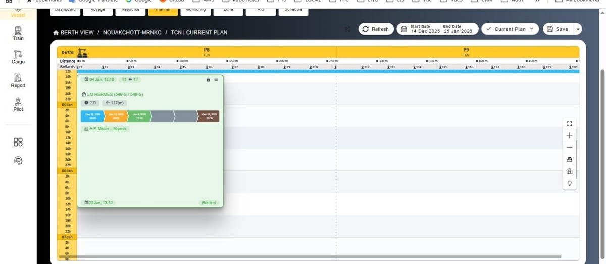
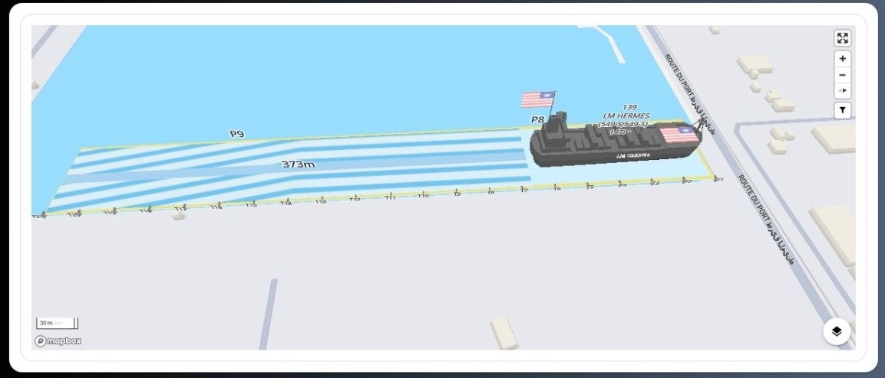
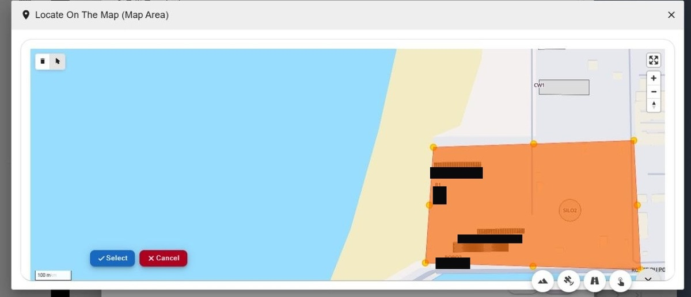

×
AZH is a distributed team of five senior engineers — 75+ years combined — delivering DevOps pipelines, cloud infrastructure, backend systems, and production AI. The same team that owns mission-critical logistics platforms live in 14 commercial ports now builds for startups, agencies, and direct B2B clients worldwide.
No junior hand-offs and no account managers relaying requirements — you work directly with the engineers who build and operate the system.
CI/CD pipelines, container orchestration, and observability stacks that keep production systems shipping safely and on schedule.
Cloud-native infrastructure designed for uptime, cost efficiency, and horizontal scale across AWS, GCP, and Azure.
APIs and microservices built for correctness under real production load, not demo load — with clean data models from day one.
LLM-powered agents, RAG pipelines, and prompt engineering wired into real business workflows, not prototypes that never ship.
Architecture reviews and system design for teams scaling past their first bottleneck — informed by running a 40+ microservice platform in production.
No junior hand-offs. Every engineer on this page ships your code personally, from first commit to production.
We optimize for correctness, maintainability, and clear ownership — not for billable hours.
Systems we've shipped run inside 14 live commercial ports and a 40+ microservice logistics platform — not toy apps.
We move at startup speed and communicate in plain terms, while designing with the rigor enterprise clients demand.
From a 5-site enterprise rail platform to the Smart Port Management system our team architected and still operates end-to-end across 14 commercial terminals.
Took over full technical ownership of Etihad Rail's multi-terminal logistics platform — 40+ microservice repositories running across 5 live sites — following a vendor transition, and have operated, extended, and modernized it since. The platform coordinates rail and truck gate operations, vehicle booking, yard tracking, and rail gateways into one centrally-managed system with a live control-tower dashboard.
More from the Smart Port Management platform

Terminal operators were scheduling vessel berths manually, causing double-bookings and no real-time visibility into bollard availability.
A time-based berth scheduling system with vessel assignments, bollard allocation, and live arrival/departure tracking.
.NET Core · React · PostgreSQL · RabbitMQ · Kubernetes

Terminal staff had no live visibility into vessel positioning and bollard occupancy across the berth in real time.
A 3D real-time berth occupancy view with live vessel positioning and bollard assignments, streamed over WebSockets.
.NET Core · Vue.js · WebSockets · Kubernetes

Terminal layout and zone definitions were static and hard to reconfigure as operations and map data changed.
An interactive GIS-based zone definition and terminal layout configuration tool built directly on live port maps.
GIS/Mapping · .NET Core · Vue.js · PostgreSQL
AZH Engineering Team is a distributed group of five senior engineers based in Istanbul, working with international clients across freelance platforms, startups, and direct B2B engagements. We stayed small on purpose — every engineer you talk to is an engineer who writes the code. Our collective background includes taking full technical ownership of a multi-terminal logistics platform for Etihad Rail and architecting a Smart Port Management system now running in 14 commercial ports.
Business expert in Port and Terminal Operating Systems (TOS) since 2008. Leads development and support teams through full project lifecycles — from requirements and architecture to deployment — managing relationships with terminal operators, shipping lines, and internal stakeholders.
Took full technical ownership of Etihad Rail's multi-terminal logistics platform (40+ microservice repositories) after vendor handover. Previously built high-volume billing and accounting systems across five major ports. Operates and owns the full Kubernetes platform lifecycle.
Led architecture and development of a Smart Port Management Platform deployed across 14 major commercial ports. Specialises in cloud-native microservices, event-driven systems, and CI/CD automation across logistics, fintech, and e-commerce verticals.
Backend engineer of 17+ years now building production AI systems: LLM-powered agents, RAG pipelines, and prompt engineering for real business operations. Deep background in port, shipping, and billing systems with strong Python and .NET foundations.
Builds enterprise-grade web applications with a focus on scalable frontend architecture and reusable component libraries. Experienced in mentoring developers and delivering production-ready UIs in Agile teams. Currently expanding into AI-powered applications and LLM integrations.
Whether it's a DevOps audit, a new backend, or a system that needs to scale — tell us what you're building and we'll get back to you within one business day.
Fast responseWe reply to every serious inquiry within one business day.
Direct engineer accessYou talk to the engineer building your system, not a middleman.
Free initial consultationWe scope the problem with you before any commitment.